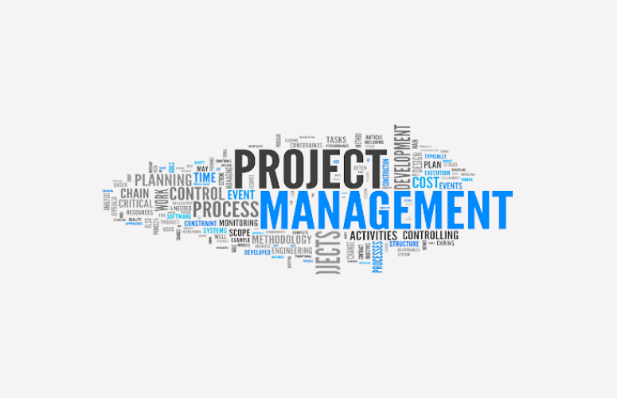

The ITIL Foundation is the entry-level qualification, which offers a general awareness of the key elements, concepts and terminology used in the ITIL Service Lifecycle, including the links between Lifecycle stages, the processes used and their contribution to Service Management practices.
ITIL® is the world’s leading best practice framework for implementing IT service management. Organizations use ITIL to plan, implement, support, and improve services and create value for their customers. In this course, you will learn the foundational knowledge and skills for adopting and adapting best practices for IT service management (ITSM) in your organization. In this course, you will identify, describe, and analyze all components of the ITIL 4 IT service management approach. You will:
This course is designed for anyone who would like a foundational understanding of IT service management, its key principles and practices, and how it will help you deliver better value to your customers. It is appropriate for all IT staff and management, as well as customers who work closely with IT to support business requirements. This course is also designed for students who are seeking the ITIL 4 Foundation certification and who want to prepare for the ITIL 4 Foundation exam.
| Related Course | |
|---|---|
 Fundamental DevOps Fundamental DevOps
|
 Project Management Professional (PMP)® Certification |
Ojo Contact148, Olojo Drive High Taste B/Stop, EIIT/FCMB Building, Ojo, Lagos State. |
Satelite Town ContactNo 1 Community Road Abulado Satelite Town, Lagos State. |
Lekki ContactNo 9, Otunba Adedoyin Ogungbe Crescent, Opposite ELIM Motors LekkiPhase 1, Lagos State. |